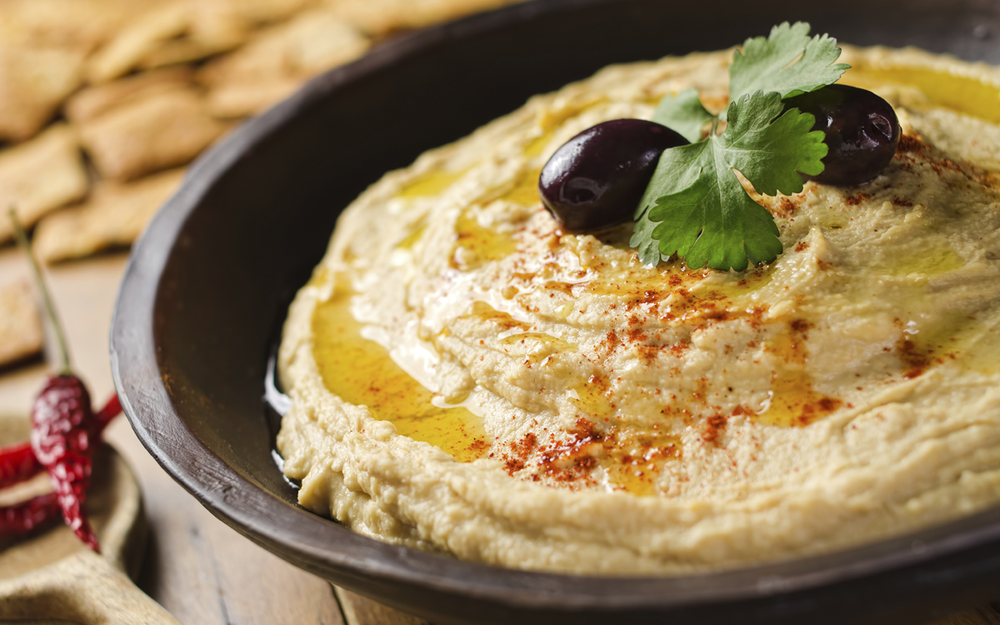

Receta de "Receta rápida de hummus"
Esta receta hace un hummus rápido y sabroso, sin ensuciar. Ha sido adaptado de varias recetas diferentes que he leído a lo largo de los años.
Links
- Ir a ingredientes
- Ir a instrucciones
- Ir a almacenamiento

El hummus es una deliciosa pasta espesa que se usa mucho en platos griegos y del Medio Oriente. Es muy sabroso con ensalada, carnes a la brasa y pan de pita.
Ingredientes
- 1 lata (400g) de garbanzos
- 175g de tahini
- 6 tomates secos
- Una pizca de pimienta de cayena
- 1 diente de ajo
- Una pizca de aceite de oliva
Instrucciones
- Retirar la piel del ajo y picar en trozos grandes.
- Quitar todas las semillas y el tallo del pimiento y picar en trozos grandes.
- Agrega todos los ingredientes en un procesador de alimentos.
- Procese todos los ingredientes en una pasta.
- Si quieres un hummus grueso "con trozos", procésalo por un tiempo breve.
- Si quieres un hummus suave, procésalo por más tiempo.
Para obtener un sabor diferente, puede intentar mezclar una pequeña medida de limón y cilantro, ají, lima y chipotle, harissa y menta, o espinacas y queso feta. Experimente y vea qué funciona para usted.
Almacenamiento
- El hummus terminado en un recipiente sellado. Debería poder usarlo durante aproximadamente una semana después de haberlo hecho. Si comienza a burbujear, definitivamente debes desecharlo.
- El hummus es apto para congelar; debe descongelarlo y usarlo en un par de meses.
